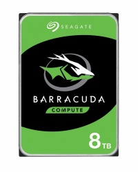
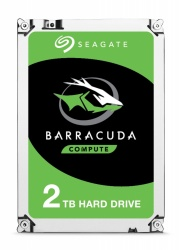
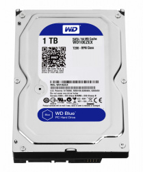
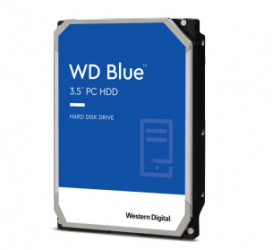
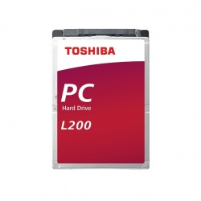

VENTA DE DISCOS DUROS
Aquí encontrarás módulos de discos duros
| PRODUCTO | DESCRIPCIÓN | PRECIO | SABER MÁS |
|---|---|---|---|
|  | Memoria: 2 TB Marca: Seagate Modelo: 1500 |
$2629 | Leer más |
|  | Memoria: 2 TB Marca: Seagate Modelo: Skyhawk |
$1,289 | Leer más |
|  | Memoria: 2 TB Marca: Toshiba Modelo: Og |
$1,049 | Leer más |
|  | Memoria: 1.5 TB Marca: Toshiba Modelo: Sata |
$2759 | Leer más |
|  | Memoria: 6 TB Marca: Western Digital Modelo: Black |
$1389 | Leer más |